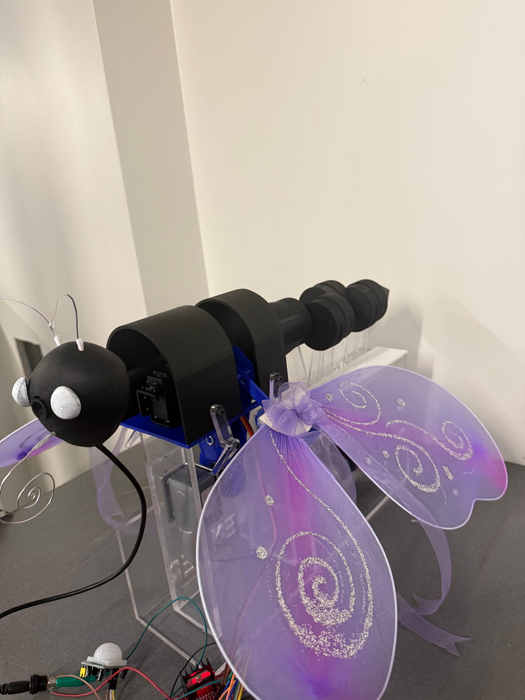
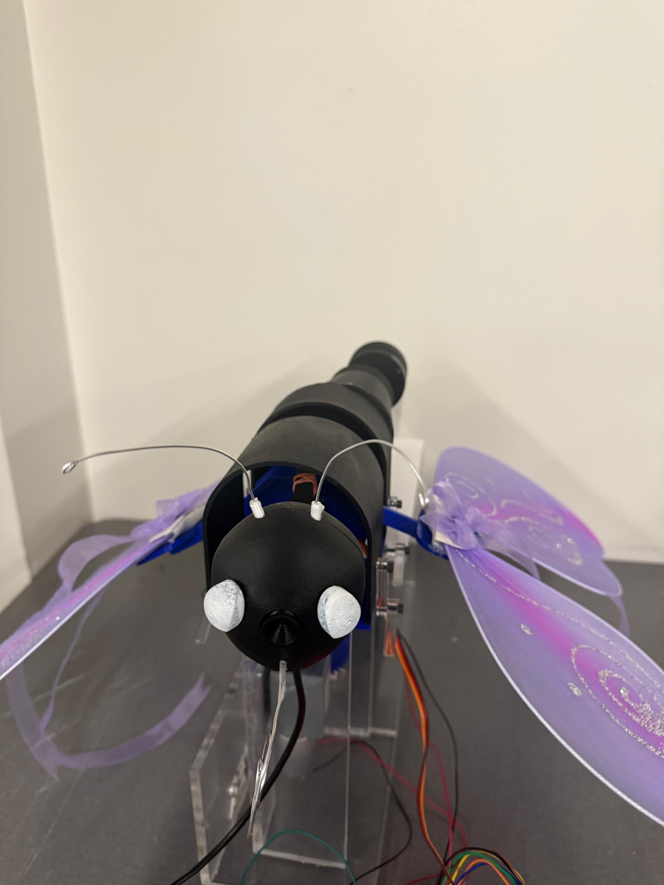
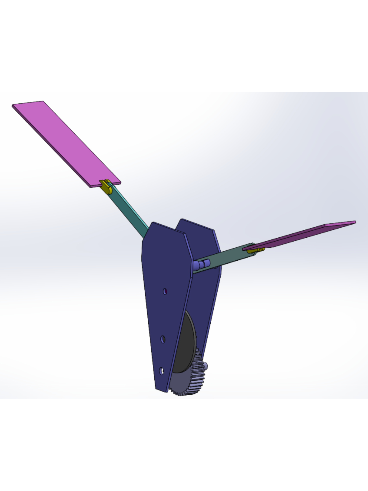
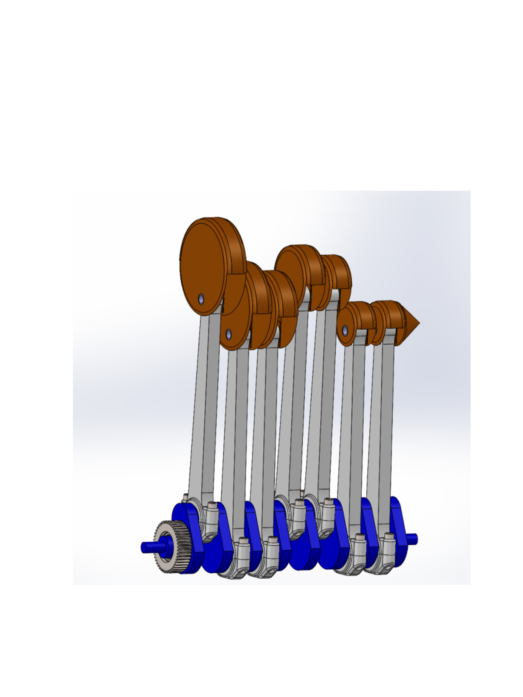
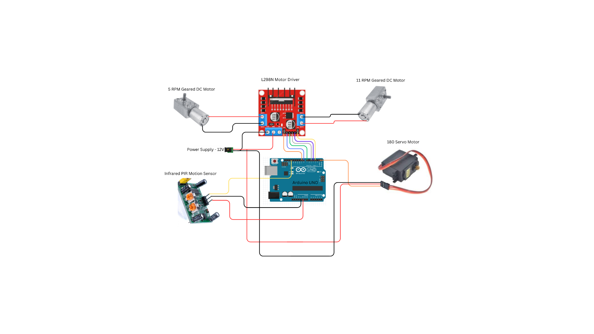

Ornibot is a robotic butterfly designed and built by Team Lavender (Rida Fathima, Vrutanti Chirag Desai, and Princy Parikh). Inspired by nature and powered by modern technology, Ornibot brings the elegance of butterfly flight to life using advanced engineering and design. It is a bio-inspired robot that simulates lifelike movements of a real butterfly through mechanical and electronic systems. It combines motion, sensory interaction, and camera vision to create an interactive, animated robotic creature.
Ornibot is a robotic butterfly that features a lifelike flapping motion powered by an ornithopter mechanism, which transforms rotary motion into up-and-down wing movement to closely mimic real butterfly flight. Its tail, or abdomen, moves using a crankshaft engine mechanism, where a series of 3D-printed crank parts create a smooth, wave-like motion. The head is equipped with a servo motor and a PIR sensor, allowing it to detect nearby motion and rotate in response, adding a sense of awareness and interactivity. Additionally, an HD camera is mounted in the head, providing a “butterfly's-eye view” and enabling user interaction from the bot's perspective.


SKETCHES
SKETCHES
Mechanism & Design - How It Works
Ornithopter Mechanism - Wing Flapping System
How it works
In real butterflies, the body constantly balances and adjusts during flight, especially through subtle movements of the abdomen. This mechanism in Ornibot introduces a second axis of movement, making it feel more alive rather than a static robot with flapping wings. It enhances the illusion of natural flight dynamics, capturing the balance, tension, and graceful flow found in real butterflies.

Why It Matters:
Mimicking actual butterfly wing movement is complex, as they flap in a figure‑eight or elliptical path. The Ornithopter mechanism simplifies this into a mechanical pattern that remains aesthetically convincing and dynamic. This approach ensures consistent movement while using minimal power, making the model both efficient and lifelike.
Crankshaft Engine Mechanism-Abdomen/Tail Motion
How it works
The abdomen is animated using a crankshaft mechanism made up of seven custom 3D‑printed parts, including a rotating crank, connecting rods, and pivot joints. As the crank rotates, powered by a DC motor, the rods move up and down to create a smooth, wave‑like motion in the tail.

Why It Matters:
In real butterflies, the body constantly balances and adjusts during flight, especially through subtle movements of the abdomen. This mechanism in Ornibot introduces a second axis of movement, making it feel more alive rather than a static robot with flapping wings. It enhances the illusion of natural flight dynamics, capturing the balance, tension, and graceful flow found in real butterflies.
Physics Behind It - The Science of Ornibot
Ornibot may look like a graceful butterfly, but beneath its wings lies a fusion of physics, mechanics, and biomimicry. Every movement—from the rhythmic wing flaps to the wave-like motion of the tail has been carefully engineered based on real-world scientific principles.
Wing Dynamics: Turning Rotation into Flight
At the core of Ornibot's flight is the ornithopter mechanism, which transforms rotational motion into the vertical oscillation of wings. This mimics how real butterflies achieve lift and propulsion. The wing movement follows a controlled frequency and amplitude, balancing aerodynamic lift with the mechanical limitations of the motor system.
The wings are designed to be lightweight yet flexible, reducing inertia and allowing smooth movement with minimal torque. The placement and angle of flapping replicate the figure-eight motion commonly seen in butterfly flight, creating a visually realistic effect while maintaining mechanical efficiency.
Tail Movement & Wave Propagation
The crankshaft engine mechanism driving the abdomen (tail) is built to produce a cyclical, wave-like motion.
As the crank rotates, it produces kinematic wave propagation along the tail’s axis, simulating balance and flexibility. The physics behind this includes principles of rotational energy, linkage dynamics, and harmonic motion. This not only enhances realism but also distributes motion energy across the entire structure—improving the robot's natural feel.
Sensor-Based Reaction: Motion-Triggered Rotation
To bring responsiveness to Ornibot, a PIR (Passive Infrared) sensor detects nearby motion. When triggered, the Arduino sends signals to a servo motor which rotates the head. This introduces the concept of sensor-actuator interaction—a cornerstone in mechatronics—where sensor data dynamically alters physical behavior.
Vision System: A New Perspective
Embedded in Ornibot's head is an HD camera that offers a first-person perspective of its surroundings. While not physics-based, this element adds a layer of immersive interaction and highlights the integration of electronics, optics, and control systems. Every motion Ornibot performs is governed by physics: Kinetics defines the forces and motion paths. Kinematics drives how the parts move and connect. Dynamics explains how energy transfers through its body. By translating these concepts into tangible mechanisms, Ornibot transforms from a simple robot into a living expression of physics and engineering bridging the gap between imagination and motion.
Technology Used - The Engineering Behind Ornibot
Creating a lifelike robotic butterfly required more than creativity, it demanded a seamless integration of mechanical systems, electronics, and modern fabrication technologies. Every component of Ornibot was carefully selected to deliver precision, realism, and responsiveness.
Core Electronics & Control System
The electronics of Ornibot are centered around an Arduino Uno, which controls all components via a breadboard. A PIR motion sensor connected to digital pin 2 detects movement and triggers a servo motor on pin 9 to rotate the head. Two geared DC motors (11 RPM and 6 RPM) are driven by an L298 motor driver, with control signals sent through analog pins A0–A5 due to issues with the digital pins. PWM signals manage motor speed and direction, enabling smooth, coordinated motion based on sensor input.

Fabrication Technologies
To bring the mechanical design to life, we used a combination of 3D printing and laser cutting. Most of the moving parts including the wings, crankshaft, and structural frame were 3D printed. This allowed for high design accuracy and the creation of custom components like joints, motor mounts, and linkages that are both lightweight and durable.
Laser cutting complemented the process by providing precision in flat parts, such as acrylic body panels and support brackets. With laser cutting, we ensured that all slots, holes, and outlines were perfectly aligned with the digital CAD models.
Software & Modeling
SolidWorks was the primary tool used for designing Ornibot. Every component was modeled in 3D, assembled virtually, and tested for motion and fit before physical manufacturing began. The software's simulation tools helped analyze kinematics and detect potential issues in design or assembly early on.
From the 3D models, we generated accurate 2D technical drawings, complete with title blocks, dimensions, and standard projections. These drawings guided both the laser cutting and 3D printing processes, ensuring every part matched its intended specifications.
Vision System
To enhance user interaction, an HD camera was installed beneath Ornibot’s eyes. This camera provides a live, first-person view when connected via USB to a laptop. It allows users to see from the butterfly’s perspective, deepening engagement and giving a unique sense of immersion.
MEET THE TEAM
Lead Designer & Documentation Head
Rida led the conceptual and design direction of Ornibot. With a sharp eye for detail and strong leadership skills, she managed the project documentation, branding, and presentation — making sure every part of Ornibot’s story was told with clarity and creativity.
Mechanical & Electronics Lead
Vrutanti brought Ornibot to life through her deep understanding of mechanical systems and circuitry. She played a key role in motor integration, sensor calibration, and 3D modeling, ensuring all moving parts worked in harmony.
Fabrication & Assembly Specialist
Princy focused on the physical construction of Ornibot from prototyping and laser cutting to assembling all 3D printed components. Her hands-on skills ensured the transition from CAD models to a real working prototype was seamless.
Our Story - The journey to achieve this milestone
Ornibot began as a second-semester engineering project at Humber Polytechnic College, with just four months to bring an idea to life. When it was time to form groups, the three of us were the last ones left. Many doubted us. “All girls? That's going to be tough. Do you even know SolidWorks?” Two of us were from Information Systems Engineering we had no experience with CAD, circuits, or mechanics. We were completely starting from zero. It felt disheartening. But in the final hour of that very first class, we said: “Let’s build a butterfly.” We started with freehand sketches and dove deep into research from butterfly motion to crankshaft mechanics. We split the work: one of us learned SolidWorks, one studied electronics and wiring, and one handled assembly and design coordination. There were setbacks, failed prints, wiring errors, and a steep learning curve. But slowly, we brought Ornibot to life — wings flapping, tail moving, and head responding to motion.
More Than a Robot
Ornibot isntt just a robotic butterfly. She's proof that being underestimated can be your greatest strength. We didn’t just complete a project we created something original, something we’re truly proud of.
“It was hard. It was new. But we did it and we did it together.” — Team Lavender
.png)
.png)
.png)
.png)
Comment as:
This site is protected by reCAPTCHA and the Google privacy policy and Terms of Service Powered by Rida Fathima